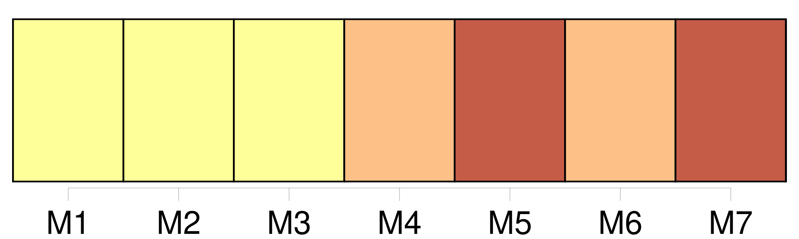
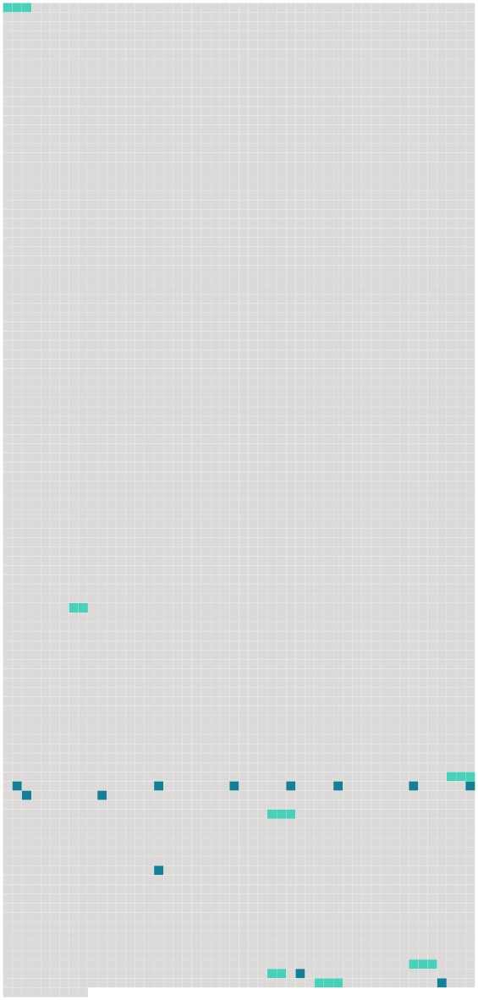

Longueur nb maillons : 19 mentions |
  |
[Le cardinal Cicognara] est son protecteur, et ne badine pas. [181 phrases] À ce mot : — Voici des brigands, chacun doubla le pas pour se mettre à l’ abri dans l’ enceinte de la villa [du cardinal] [57 phrases] [Le cardinal Cicognara] , [qui] avait épié du coin de l’ œil la direction que prit le regard de [son] protégé, aperçut alors le Français ; [il] se pencha vers un de [ses] aides-de-camp ecclésiastiques, et [parut] demander le nom du sculpteur. Quand [il] eut obtenu la réponse qu’ [il] désirait, [il] contempla fort attentivement l’ artiste, et [donna] des ordres à un abbé, qui disparut avec prestesse. [4 phrases]
[Le cardinal Cicognara] trompe le pape et toute la ville de Rome! [20 phrases]
— Non, reprit -il, [il] n’ aurait pas tant de bassesse. [44 phrases]
— De la part [du cardinal Cicognara] , dit l’ un d’ eux. [1 phrases]
Ces sombres émissaires apprirent à Zambinella l’ inquiétude de [son protecteur] , [qui] attendait à la porte dans une voiture fermée, afin de pouvoir l’ emmener aussitôt qu’ il serait délivré. [1 phrases] — Madame, [le cardinal Cicognara] se rendit maître de la statue de Zambinella et la [fit] exécuter en marbre, elle est aujourd’hui dans le musée Albani. |
 |
La ressource peut être téléchargée sur la page Ortolang
Si vous avez des questions ou vous voyez des erreurs, merci d'envoyer un mail à silvia.federzoni89@gmail.com
Site développé par S. Federzoni (contact)